Code
# [Config] Rutas
df_tab = pd.read_csv("../Data/TABULAR.csv")
df_dx = pd.read_csv('../Data/ANDI_out.csv')Las imágenes utilizadas en este estudio provienen de la iniciativa Alzheimer’s Disease Neuroimaging Initiative (ADNI), un repositorio internacional de neuroimágenes longitudinales. Se seleccionaron exclusivamente imágenes estructurales T1‐ponderadas (MRI) correspondientes a sujetos con diagnóstico deterioro cognitivo leve (MCI) y demencia tipo Alzheimer (AD).
El dataset tabular proviene de los datos clínicos y neuropsicológicos asociados a las mismas visitas de imagen, conteniendo información sociodemográfica, genética, diagnóstica y volumétrica (FreeSurfer).
# [Config] Rutas
df_tab = pd.read_csv("../Data/TABULAR.csv")
df_dx = pd.read_csv('../Data/ANDI_out.csv')# Caracteristicas
print("CARACTERÍSTICAS\n")
print("======================"
f"\n💿 Imágenes: {len(df_tab)}"
f"\n👨🦳 Cantidad de pacientes: {df_dx['sujeto_id'].nunique()}"
f"\n⏺️ Vistas dispobibles: {df_dx['Visit'].nunique()}, en los meses {df_tab['Visita'].unique()}"
"\n======================"
)
# Progeso de la enfermedad
labels_por_sujeto = df_tab.groupby("sujeto_id")["label"].first()
tabla_1 = pd.DataFrame({
"conteo": labels_por_sujeto.value_counts(),
"porcentaje": labels_por_sujeto.value_counts(normalize=True).mul(100).round(2)
})
tabla_1.index = tabla_1.index.map({0: "No progreso", 1: "Progreso"})
display(tabla_1.style.set_caption("Distribución del progreso de la enfermedad"))
# Imágnes
tabla_2 = pd.DataFrame({
"conteo": df_tab["is_dementia"].value_counts(),
"porcentaje": df_tab["is_dementia"].value_counts(normalize=True).mul(100).round(2)
})
tabla_2.index = tabla_2.index.map({0: "MCI", 1: "Dementia"})
display(tabla_2.style.set_caption("Distribución de imágenes con Dementia"))
# Edad
print("======================"
f"\n#️⃣ Edad de los pacientes:"
f"\nMín: {df_tab['Age'].min()} | Máx: {df_tab['Age'].max()} | Mean: {df_tab['Age'].mean().round(2)}"
"\n======================"
)
# Sexo
sex = df_tab.groupby("sujeto_id")["Sexo"].first()
tabla_3 = pd.DataFrame({
"conteo": sex.value_counts(),
"porcentaje": sex.value_counts(normalize=True).mul(100).round(2)
})
tabla_3.index = tabla_3.index.map({0: "Masculino", 1: "Femenino"})
display(tabla_3.style.set_caption("Distribución del sexo"))
# Nivel educativo
educat = {
10: "10 años (básica incompleta)",
12: "12 años (secundaria completa)",
13: "13 años (secundaria + 1 año)",
14: "14 años (preuniversitario)",
16: "16 años (licenciatura)",
17: "17 años (posgrado parcial)",
18: "18 años (maestría)",
19: "19 años (posgrado incompleto)",
20: "20 años (doctorado/profesional)"
}
tabla_4 = pd.DataFrame({
"conteo": df_tab["Educat"].value_counts(),
"porcentaje": df_tab["Educat"].value_counts(normalize=True).mul(100).round(2)
})
tabla_4.index = tabla_4.index.map(educat)
display(tabla_4.style.set_caption("Distribución de nivel educativo"))CARACTERÍSTICAS
======================
💿 Imágenes: 220
👨🦳 Cantidad de pacientes: 51
⏺️ Vistas dispobibles: 7, en los meses [ 6 12 18 24 36 48 60]
======================| conteo | porcentaje | |
|---|---|---|
| label | ||
| No progreso | 31 | 60.780000 |
| Progreso | 20 | 39.220000 |
| conteo | porcentaje | |
|---|---|---|
| is_dementia | ||
| MCI | 158 | 71.820000 |
| Dementia | 62 | 28.180000 |
======================
#️⃣ Edad de los pacientes:
Mín: 61 | Máx: 91 | Mean: 75.79
======================| conteo | porcentaje | |
|---|---|---|
| Sexo | ||
| Masculino | 38 | 74.510000 |
| Femenino | 13 | 25.490000 |
| conteo | porcentaje | |
|---|---|---|
| Educat | ||
| 16 años (licenciatura) | 62 | 28.180000 |
| 18 años (maestría) | 53 | 24.090000 |
| 20 años (doctorado/profesional) | 31 | 14.090000 |
| 19 años (posgrado incompleto) | 19 | 8.640000 |
| 12 años (secundaria completa) | 17 | 7.730000 |
| 14 años (preuniversitario) | 14 | 6.360000 |
| 10 años (básica incompleta) | 13 | 5.910000 |
| 17 años (posgrado parcial) | 6 | 2.730000 |
| 13 años (secundaria + 1 año) | 5 | 2.270000 |
Variables Volumétricas
df_tab.info()<class 'pandas.core.frame.DataFrame'>
RangeIndex: 220 entries, 0 to 219
Data columns (total 24 columns):
# Column Non-Null Count Dtype
--- ------ -------------- -----
0 sujeto_id 220 non-null object
1 label 220 non-null int64
2 is_dementia 220 non-null int64
3 Visita 220 non-null int64
4 Age 220 non-null int64
5 Sexo 220 non-null int64
6 Educat 220 non-null float64
7 APOE4_std 220 non-null float64
8 CDRSB_std 220 non-null float64
9 MMSE_std 220 non-null float64
10 ADAS13_std 220 non-null float64
11 FAQ_std 220 non-null float64
12 RAVLT_immediate_std 220 non-null float64
13 RAVLT_learning_std 220 non-null float64
14 RAVLT_forgetting_std 220 non-null float64
15 DIGITSCOR_std 220 non-null float64
16 TRABSCOR_std 220 non-null float64
17 Ventricles_std 220 non-null float64
18 Hippocampus_std 220 non-null float64
19 WholeBrain_std 220 non-null float64
20 Entorhinal_std 220 non-null float64
21 Fusiform_std 220 non-null float64
22 MidTemp_std 220 non-null float64
23 ICV_std 220 non-null float64
dtypes: float64(18), int64(5), object(1)
memory usage: 41.4+ KBdf_tab.columnsIndex(['sujeto_id', 'label', 'is_dementia', 'Visita', 'Age', 'Sexo', 'Educat',
'APOE4_std', 'CDRSB_std', 'MMSE_std', 'ADAS13_std', 'FAQ_std',
'RAVLT_immediate_std', 'RAVLT_learning_std', 'RAVLT_forgetting_std',
'DIGITSCOR_std', 'TRABSCOR_std', 'Ventricles_std', 'Hippocampus_std',
'WholeBrain_std', 'Entorhinal_std', 'Fusiform_std', 'MidTemp_std',
'ICV_std'],
dtype='object')# Crear tabla de presencia de visitas por sujeto
# Asumiendo df tiene columnas: subject_id, Visita
df_visitas = df_tab.copy()
df_visitas['Presente'] = 1 # Marca cada fila como "visita existente"
tabla_visitas = df_visitas.pivot_table(
index='sujeto_id',
columns='Visita',
values='Presente',
aggfunc='last',
fill_value=0
)
# Graficar heatmap
plt.figure(figsize=(12,8))
sns.heatmap(tabla_visitas, cmap="Blues", cbar=False, linewidths=0.5, linecolor='lightgray')
plt.title("Disponibilidad de visitas por sujeto")
plt.xlabel("Visita")
plt.ylabel("Sujeto")
plt.show()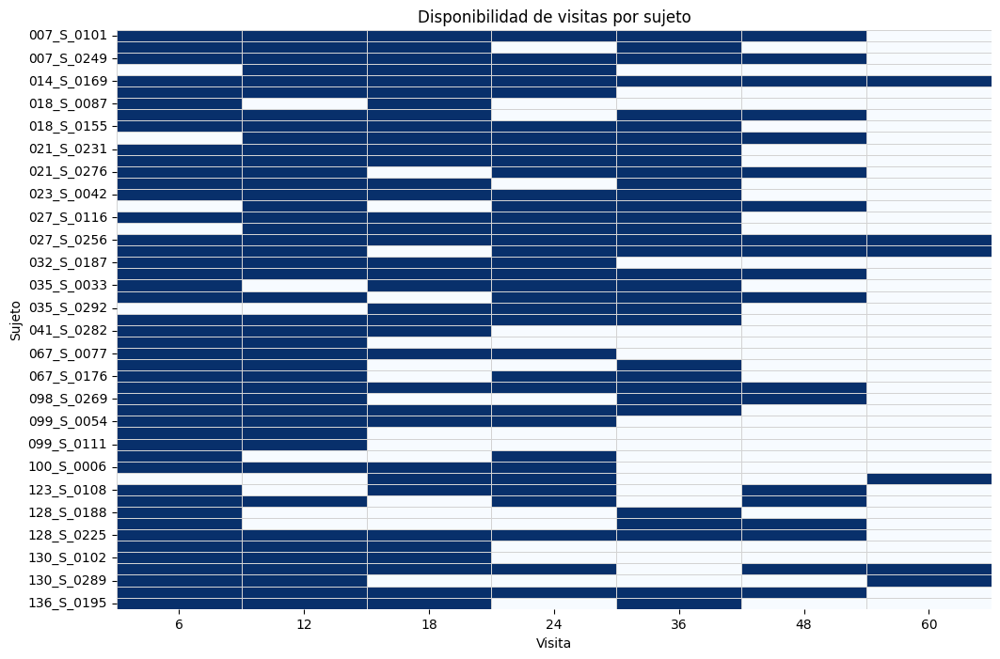
df_dx["fecha_imagen"] = pd.to_datetime(df_dx["fecha_imagen"])
df_dx["año"] = df_dx["fecha_imagen"].dt.year
df_duracion = df_dx.sort_values(["sujeto_id", "fecha_imagen"]).groupby("sujeto_id").agg(
año_inicio=("año", "first"),
año_final=("año", "last")
).reset_index()
df_duracion["duracion_anios"] = df_duracion["año_final"] - df_duracion["año_inicio"]
display(df_duracion["duracion_anios"].value_counts().sort_index().to_frame())
df_duracion["duracion_anios"].value_counts().sort_index().plot.barh()
plt.title("Años en estudio")| count | |
|---|---|
| duracion_anios | |
| 0 | 2 |
| 1 | 8 |
| 2 | 11 |
| 3 | 11 |
| 4 | 14 |
| 5 | 5 |
Text(0.5, 1.0, 'Años en estudio')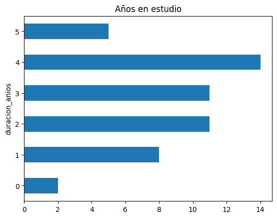
import matplotlib.pyplot as plt
import matplotlib.cm as cm
import numpy as np
plt.figure(figsize=(12,8))
# Colormap continuo
colormap = plt.get_cmap("viridis")
# Normalizamos edades entre 0 y 1 para el colormap
ages = df_tab['Age']
norm = plt.Normalize(vmin=ages.min(), vmax=ages.max())
for sid, grupo in df_tab.groupby('sujeto_id'):
color_values = colormap(norm(grupo['Age'])) # color por edad
plt.scatter(grupo['Age'], [sid]*len(grupo), c=color_values, s=50) # puntos
plt.plot(grupo['Age'], [sid]*len(grupo), color='gray', alpha=0.3) # línea base
plt.xlabel("Edad")
plt.ylabel("Sujeto")
plt.title("Línea temporal de visitas por sujeto")
plt.tight_layout()
plt.show()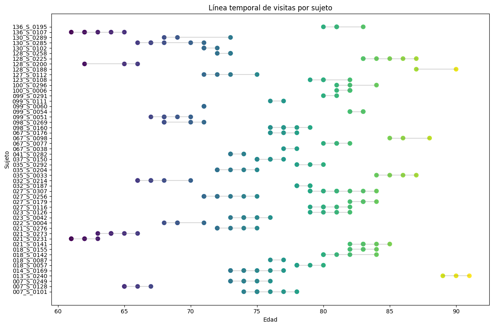
plt.figure(figsize=(10,6))
sns.boxplot(data=df_tab, x='Visita', y='Age', palette='viridis', hue='Visita')
sns.stripplot(data=df_tab, x='Visita', y='Age', color='black', alpha=0.3, jitter=0.2) # opcional: puntos individuales
plt.title("Distribución de edades por visita")
plt.xlabel("Visita")
plt.ylabel("Edad")
plt.tight_layout()
plt.show()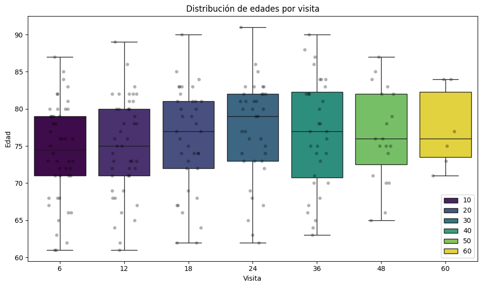
df_tab.columnsIndex(['sujeto_id', 'label', 'is_dementia', 'Visita', 'Age', 'Sexo', 'Educat',
'APOE4_std', 'CDRSB_std', 'MMSE_std', 'ADAS13_std', 'FAQ_std',
'RAVLT_immediate_std', 'RAVLT_learning_std', 'RAVLT_forgetting_std',
'DIGITSCOR_std', 'TRABSCOR_std', 'Ventricles_std', 'Hippocampus_std',
'WholeBrain_std', 'Entorhinal_std', 'Fusiform_std', 'MidTemp_std',
'ICV_std'],
dtype='object')biomarcadores = ['APOE4', 'CDRSB', 'MMSE', 'ADAS13', 'FAQ',
'RAVLT_immediate', 'RAVLT_learning', 'RAVLT_forgetting', 'DIGITSCOR',
'TRABSCOR']plt.figure(figsize=(6, 12))
for i, biom in enumerate(biomarcadores, 1):
plt.subplot(len(biomarcadores), 1, i)
sns.boxplot(x=df_dx[biom], color='#2E8E7E')
plt.title(biom)
plt.xlabel("")
plt.suptitle("Distribución de Biomarcadores", fontsize=14)
plt.figtext(0.02, 0.5, "Valor real", ha='center', va='center', rotation='vertical', fontsize=12)
plt.tight_layout(rect=[0.05, 0, 1, 1]) # deja espacio para el ylabel global
plt.show()
plt.show()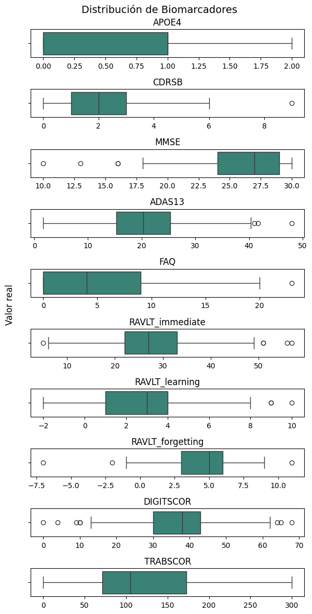
bio_std = ['APOE4_std', 'CDRSB_std', 'MMSE_std', 'ADAS13_std', 'FAQ_std',
'RAVLT_immediate_std', 'RAVLT_learning_std', 'RAVLT_forgetting_std',
'DIGITSCOR_std', 'TRABSCOR_std']plt.figure(figsize=(10,8))
sns.heatmap(df_tab[bio_std].corr(), annot=True, fmt=".2f", cmap="GnBu")
plt.title("Matriz de correlaciones de Biomarcadores")
plt.show()
volumen = ['Ventricles', 'Hippocampus', 'WholeBrain', 'Entorhinal',
'Fusiform', 'MidTemp', 'ICV']plt.figure(figsize=(6, 12))
for i, biom in enumerate(volumen, 1):
plt.subplot(len(volumen), 1, i)
sns.boxplot(x=df_dx[biom], color='#3E0C4A')
plt.title(biom)
plt.xlabel("")
plt.suptitle("Distribución de Volúmenes cerebrales", fontsize=14)
plt.figtext(0.02, 0.5, "Valor real", ha='center', va='center', rotation='vertical', fontsize=12)
plt.tight_layout(rect=[0.05, 0, 1, 1]) # deja espacio para el ylabel global
plt.show()
plt.show()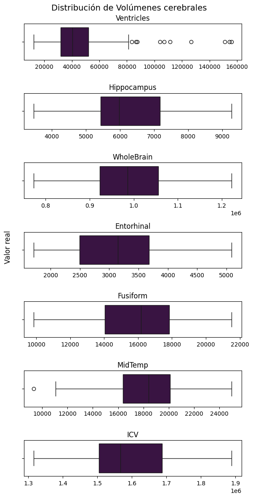
volumn_std =[
'Ventricles_std', 'Hippocampus_std',
'WholeBrain_std', 'Entorhinal_std', 'Fusiform_std', 'MidTemp_std',
'ICV_std'
]plt.figure(figsize=(10,8))
sns.heatmap(df_tab[volumn_std].corr(), annot=True, fmt=".2f", cmap="GnBu")
plt.title("Matriz de correlaciones Volúmenes")
plt.show()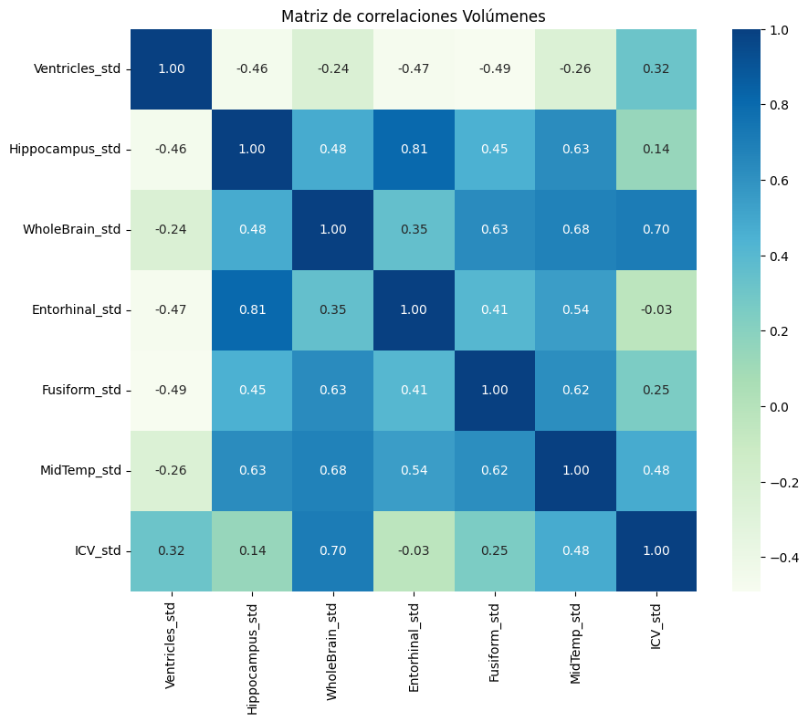
# Aplanar columnas
info_volumen.columns = ['sujeto_id'] + [f"{var}_{stat}" for var, stat in info_volumen.columns[1:]]
# Convertir a formato largo
info_long = pd.melt(
info_volumen,
id_vars="sujeto_id",
var_name="variable_estadistica",
value_name="valor"
)
# Separar nombre de variable y tipo de estadístico
info_long[["variable", "estadistica"]] = info_long["variable_estadistica"].str.rsplit("_", n=1, expand=True)C:\Users\Hp\AppData\Local\Temp\ipykernel_34204\1002387156.py:19: FutureWarning:
Passing `palette` without assigning `hue` is deprecated and will be removed in v0.14.0. Assign the `x` variable to `hue` and set `legend=False` for the same effect.
sns.boxplot(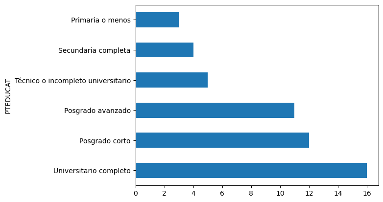
C:\Users\Hp\AppData\Local\Temp\ipykernel_34204\1002387156.py:19: FutureWarning:
Passing `palette` without assigning `hue` is deprecated and will be removed in v0.14.0. Assign the `x` variable to `hue` and set `legend=False` for the same effect.
sns.boxplot(
C:\Users\Hp\AppData\Local\Temp\ipykernel_34204\1002387156.py:19: FutureWarning:
Passing `palette` without assigning `hue` is deprecated and will be removed in v0.14.0. Assign the `x` variable to `hue` and set `legend=False` for the same effect.
sns.boxplot(
C:\Users\Hp\AppData\Local\Temp\ipykernel_34204\1002387156.py:19: FutureWarning:
Passing `palette` without assigning `hue` is deprecated and will be removed in v0.14.0. Assign the `x` variable to `hue` and set `legend=False` for the same effect.
sns.boxplot(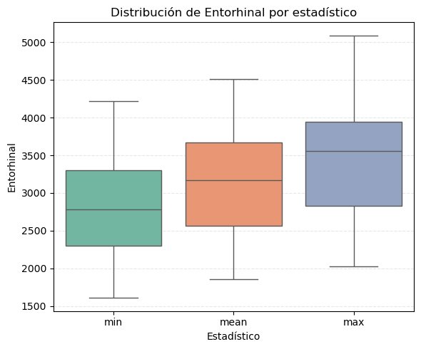
C:\Users\Hp\AppData\Local\Temp\ipykernel_34204\1002387156.py:19: FutureWarning:
Passing `palette` without assigning `hue` is deprecated and will be removed in v0.14.0. Assign the `x` variable to `hue` and set `legend=False` for the same effect.
sns.boxplot(
C:\Users\Hp\AppData\Local\Temp\ipykernel_34204\1002387156.py:19: FutureWarning:
Passing `palette` without assigning `hue` is deprecated and will be removed in v0.14.0. Assign the `x` variable to `hue` and set `legend=False` for the same effect.
sns.boxplot(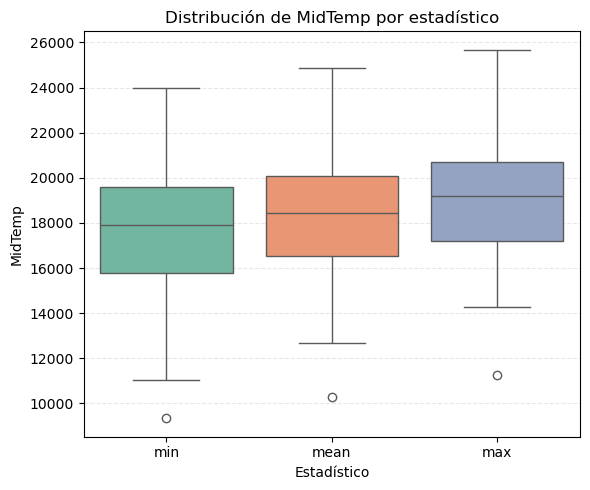
C:\Users\Hp\AppData\Local\Temp\ipykernel_34204\1002387156.py:19: FutureWarning:
Passing `palette` without assigning `hue` is deprecated and will be removed in v0.14.0. Assign the `x` variable to `hue` and set `legend=False` for the same effect.
sns.boxplot(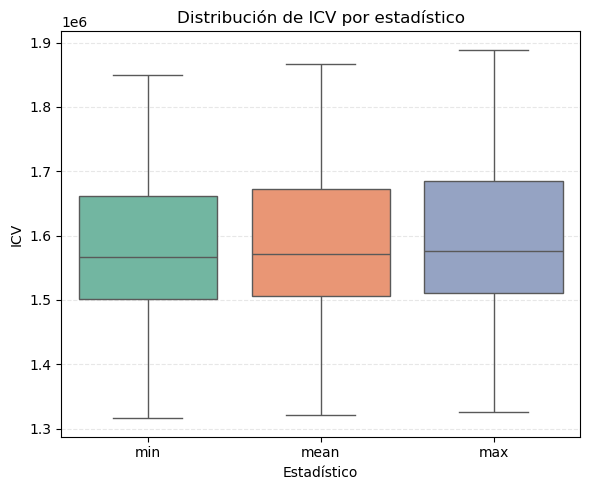
# Agrupar por variable y estadístico
tabla_resumen = info_long.groupby(["variable", "estadistica"])["valor"].agg(["min", "mean", "max"]).round(2).reset_index()
# Ordenar por variable y tipo de estadístico
tabla_resumen = tabla_resumen.sort_values(["variable", "estadistica"])
# Mostrar
tabla_resumen| variable | estadistica | min | mean | max | |
|---|---|---|---|---|---|
| 0 | Entorhinal | max | 2023.00 | 3481.71 | 5090.0 |
| 1 | Entorhinal | mean | 1853.00 | 3157.49 | 4511.2 |
| 2 | Entorhinal | min | 1608.00 | 2832.86 | 4215.0 |
| 3 | Fusiform | max | 10946.00 | 16742.86 | 21808.0 |
| 4 | Fusiform | mean | 10424.33 | 16061.54 | 20798.8 |
| 5 | Fusiform | min | 9860.00 | 15365.92 | 19972.0 |
| 6 | Hippocampus | max | 4087.00 | 6431.73 | 9396.0 |
| 7 | Hippocampus | mean | 3717.67 | 6205.67 | 9251.5 |
| 8 | Hippocampus | min | 3471.00 | 5997.59 | 9102.0 |
| 9 | ICV | max | 1325720.00 | 1595814.31 | 1888900.0 |
| 10 | ICV | mean | 1320936.67 | 1585118.96 | 1867338.0 |
| 11 | ICV | min | 1315940.00 | 1575091.76 | 1850260.0 |
| 12 | MidTemp | max | 11241.00 | 18991.55 | 25678.0 |
| 13 | MidTemp | mean | 10291.00 | 18319.15 | 24870.0 |
| 14 | MidTemp | min | 9341.00 | 17627.04 | 23970.0 |
| 15 | Ventricles | max | 13209.00 | 48518.61 | 156066.0 |
| 16 | Ventricles | mean | 12704.00 | 45054.87 | 146665.4 |
| 17 | Ventricles | min | 12346.00 | 41663.00 | 126585.0 |
| 18 | WholeBrain | max | 777166.00 | 1012856.61 | 1249300.0 |
| 19 | WholeBrain | mean | 771940.33 | 994606.37 | 1208020.0 |
| 20 | WholeBrain | min | 765255.00 | 976903.06 | 1188380.0 |
Las variables de volumen derivadas de imágenes de resonancia magnética permiten cuantificar la estructura anatómica del cerebro y detectar cambios asociados con la atrofia y el deterioro cognitivo.
En general, los volúmenes medios observados muestran una distribución coherente con las variaciones esperadas entre sujetos y posibles etapas de deterioro. El volumen intracraneal total (ICV) presenta valores promedio cercanos a 1.59 millones de mm³, siendo una medida anatómica estable que se utiliza para normalizar otras variables de volumen.
El volumen total cerebral (WholeBrain) muestra valores promedio alrededor del millón de mm³, mientras que los ventrículos (Ventricles) presentan una alta variabilidad (media ≈ 47.000 mm³), lo cual es característico de la expansión ventricular asociada a procesos de atrofia cortical.
Regiones críticas vinculadas con la memoria, como el hipocampo (Hippocampus) y la corteza entorrinal (Entorhinal), presentan volúmenes medios de aproximadamente 6.200 mm³ y 3.100 mm³, respectivamente. La reducción en estas áreas se considera uno de los primeros indicadores estructurales del Alzheimer.
Por otro lado, estructuras del lóbulo temporal, como el giro fusiforme (Fusiform) y el lóbulo temporal medio (MidTemp), presentan volúmenes intermedios (entre 15.000 y 18.000 mm³), reflejando su participación en procesos de reconocimiento visual y auditivo.
En conjunto, los resultados muestran una tendencia esperada de atrofia progresiva, principalmente en regiones temporales y de memoria, mientras que ICV y WholeBrain actúan como referencias anatómicas estables para la comparación entre sujetos y sesiones.
tabla_dx = df_dx.pivot_table(
index="sujeto_id",
columns="Visit",
values="DX",
aggfunc="first" # Asume que hay una sola entrada por sujeto-visita
).fillna("-")
tabla_dx| Visit | m06 | m12 | m18 | m24 | m36 |
|---|---|---|---|---|---|
| sujeto_id | |||||
| 007_S_0101 | MCI | MCI | MCI | Dementia | Dementia |
| 007_S_0128 | MCI | MCI | Dementia | - | - |
| 007_S_0249 | MCI | Dementia | Dementia | Dementia | Dementia |
| 013_S_0240 | - | MCI | Dementia | - | - |
| 014_S_0169 | MCI | MCI | MCI | MCI | MCI |
| 018_S_0057 | MCI | MCI | Dementia | Dementia | - |
| 018_S_0087 | MCI | - | MCI | - | - |
| 018_S_0142 | MCI | MCI | MCI | - | - |
| 018_S_0155 | MCI | MCI | MCI | MCI | - |
| 021_S_0141 | - | Dementia | Dementia | Dementia | - |
| 021_S_0231 | MCI | MCI | MCI | Dementia | Dementia |
| 021_S_0273 | MCI | MCI | MCI | MCI | - |
| 021_S_0276 | MCI | MCI | - | MCI | MCI |
| 022_S_0004 | MCI | MCI | MCI | - | - |
| 023_S_0042 | MCI | Dementia | Dementia | Dementia | Dementia |
| 023_S_0126 | - | MCI | - | MCI | Dementia |
| 027_S_0116 | MCI | MCI | MCI | MCI | MCI |
| 027_S_0179 | - | MCI | Dementia | - | - |
| 027_S_0256 | Dementia | Dementia | Dementia | Dementia | Dementia |
| 027_S_0307 | MCI | MCI | - | MCI | MCI |
| 032_S_0187 | MCI | MCI | MCI | Dementia | - |
| 032_S_0214 | MCI | MCI | MCI | Dementia | Dementia |
| 035_S_0033 | MCI | - | MCI | MCI | MCI |
| 035_S_0204 | MCI | Dementia | - | Dementia | - |
| 035_S_0292 | - | - | MCI | - | - |
| 037_S_0150 | MCI | MCI | MCI | MCI | - |
| 041_S_0282 | MCI | MCI | MCI | - | - |
| 067_S_0038 | MCI | MCI | - | - | - |
| 067_S_0077 | MCI | Dementia | Dementia | Dementia | - |
| 067_S_0098 | MCI | MCI | - | - | - |
| 067_S_0176 | MCI | MCI | - | MCI | - |
| 098_S_0160 | MCI | MCI | MCI | MCI | - |
| 098_S_0269 | Dementia | Dementia | - | - | - |
| 099_S_0051 | MCI | MCI | MCI | MCI | - |
| 099_S_0054 | MCI | Dementia | Dementia | Dementia | - |
| 099_S_0060 | MCI | MCI | - | - | - |
| 099_S_0111 | MCI | Dementia | - | - | - |
| 099_S_0291 | MCI | - | - | - | - |
| 100_S_0006 | MCI | MCI | MCI | MCI | - |
| 100_S_0296 | - | - | MCI | MCI | - |
| 123_S_0108 | MCI | - | Dementia | Dementia | - |
| 128_S_0188 | MCI | - | - | - | - |
| 128_S_0200 | MCI | - | - | - | - |
| 128_S_0225 | MCI | MCI | MCI | MCI | MCI |
| 128_S_0258 | MCI | MCI | MCI | - | - |
| 130_S_0102 | MCI | MCI | MCI | - | - |
| 130_S_0285 | MCI | MCI | MCI | MCI | - |
| 130_S_0289 | MCI | MCI | - | - | - |
| 136_S_0107 | MCI | MCI | MCI | MCI | MCI |
| 136_S_0195 | MCI | Dementia | Dementia | - | - |
df_a = df_dx.sort_values(["sujeto_id", "Visit"]).groupby("sujeto_id").agg(
dx_inicio=("DX", "first"),
dx_final=("DX", "last")
).reset_index()
tabla_transicion = df_a.groupby(["dx_inicio", "dx_final"]).size().unstack(fill_value=0)
tabla_transicion| dx_final | Dementia | MCI |
|---|---|---|
| dx_inicio | ||
| Dementia | 3 | 0 |
| MCI | 17 | 30 |
El diagnóstico inicial muestra que todos los participantes comenzaron el estudio con deterioro cognitivo leve (MCI). Sin embargo, al finalizar el seguimiento, 22 de ellos progresaron a demencia, mientras que 29 se mantuvieron en la misma condición. Esto refleja una tendencia esperada en la evolución clínica del MCI, donde una proporción significativa de pacientes presenta un empeoramiento cognitivo a lo largo del tiempo, mientras que otros permanecen estables.